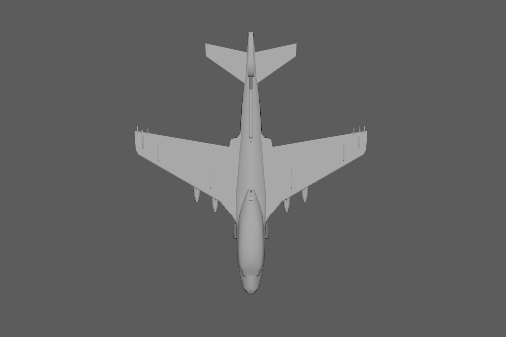
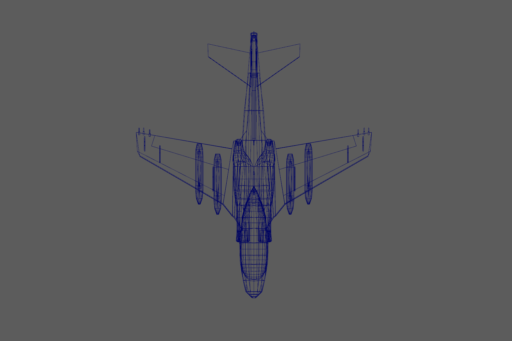
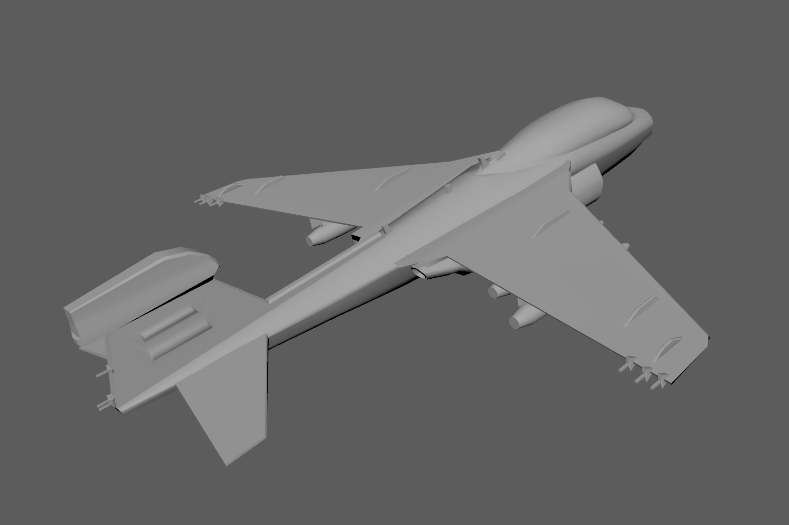
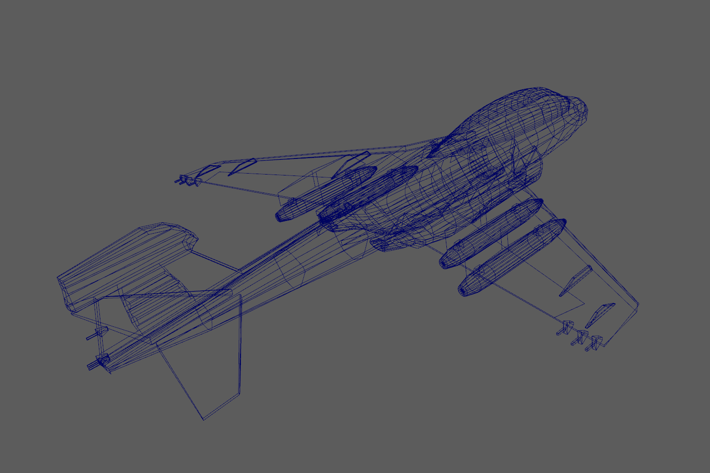
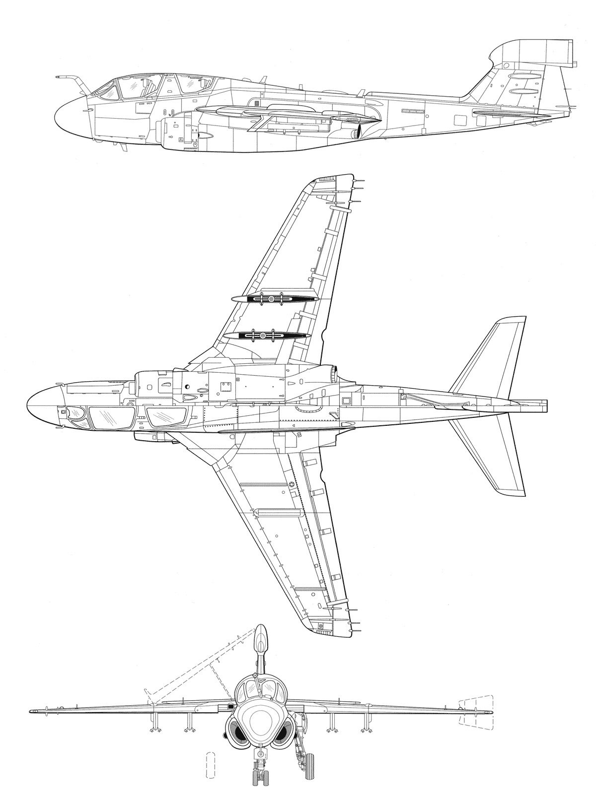

Computer Animation
Spring 2017
Due 2/21/2017
I chose to model the Northrop Grumman EA-6B Prowler, an electronic warfare aircraft. Since 1971, this aircraft has jammed enemy radar and gathered intelligence on enemy air defense systems. Though it has been withdrawn from Navy service, the US Marine Corps plans to fly the Prowler until 2019.
Modeling the Prowler was kind of a pain. It has a number of irregular curves, and its distinctive bulging cockpit was particularly difficult to get right. I'm relatively pleased with the result, though I wish the shading would play a bit more nicely with the geometry.
Fortunately, the wings are relatively simple, and modeling from the top view was easy. I think the silhouette of my model closely matches the real thing.
 Perhaps the most finnicky bits were the engines - the schematic views I had obscured large parts of the engines. I'm not too happy with the way they turned out - they're pretty lumpy and there are a number of persistent inaccuracies.
 To make up for some of the model's lumpiness, I added plently of real details. I used the following image as a reference for modeling. Though I had check to ensure that the image was to scale prior to modeling, I found a few discrepancies between images. The height of the vertical stabilizer was espcially problematic. In any case, the precision of the drawings were very useful. I obtained the blueprint from drawingdatabase.com.
To achieve symmetry, I only modeled half of the aircraft and only at the end did I mirror it and make minor adjustments. A fun note about this model is that the main fuselage and engine began as a cube. In fact, everything but the bombs began as cubes. I've included playblasts of 360-degree views of my model below: